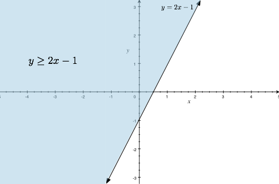
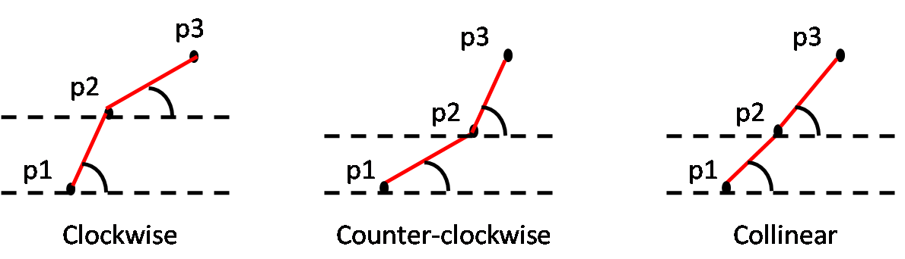
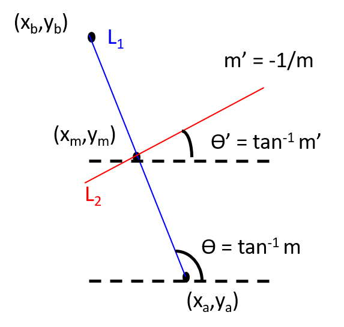

| Prev | Next |
Introduction to Computational Geometry
Computational geometry is a field of study that requires a mix of geometric concepts, specialized data structures and algorithms to solve real-life practical problems in today's world. In some scenarios, problems from other domains like databases, machine learning, etc are mapped to geometric domain and solved.
Basic definitions
1A. Euclidean distance in 2D space
Let the points be: p1 = (x1, y1), p2 = (x2, y2).
d(p1, p2) = SQRT[ (x2 - x1)2 + (y2 - y1)2 ]
1B. Euclidean distance in kD space
Let the points be: p1 = (x1, x2, ..., xk) and p2 = (y1, y2, ..., yk).
d(p1, p2) = SQRT[ (Σki=1 (yi - xi)2 ]
2. Slope of a line given two points in 2D space
Let the points be p1 = (x1, y1) and p2 = (x2, y2).
Slope m = (y2 - y1) / (x2 -x1)
Note: The idea of slope does not generalize beyond 2D space.
3A. Equation of a line given a point and slope in 2D space
Let the point be (x1, y1) and slope be m
y - y1 = m (x - x1)
3B. Equation of a line given two points in 2D space
Let the points be p1 = (x1, y1) and p2 = (x2, y2).
Step 1: Use 2A to find slope m.
Step 2: With m and one of the point, use 3A to find the equation of the line.
Note: This equation of a line cannot be generalized beyond 2D. In order to represent a line in a k-D space, we have to go for parameteric representation.
Caution: If you are thinking ax + by + cz + d = 0 represents a line in 3D space, you are wrong. This represents a plane, not a line!!
4A. Parameteric representation of a line passing through two points (any dimension)
Let the points be p1 = (x1, x2, ..., xk) and p2 = (y1, y2, ..., yk).
Vector a = p2 + (p1 - p2)t = t p1 + (1 - t)p2 where t ∈ ℝ
Note that this representation of line works for any dimensions.
Watch this video of Khan academy for an excellent video on Parameteric representation of line
4B. Parameteric representation of a line segment passing between two points (any dimension)
Let the points be p1 = (x1, x2, ..., xk) and p2 = (y1, y2, ..., yk).
Segment(p1p2) = p2 + (p1 - p2)t = t p1 + (1 - t)p2 where t ∈ [0,1]
5. Angle between two edges of a triangle
Given a triangle with edges A, B and C, the angle θ between the two edges B and C can be obtained by
θ = cos-1[ (|B|^2 + |C|^2 - |A|^2) / 2.|B|.|C| ]
6. Signed area of a triangle given three points
Let the vertices of a triangle in 2D space be p1 = (x1,y1), p2 = (x2,y2) and p3 = (x3,y3). Then the signed area is half the determinant D(p1,p2,p3) of the following matrix which is given by
| |x1 | y1 | 1| | |
| D(p1,p2,p3) = | |x2 | y2 | 1| |
| |x3 | y3 | 1| |
Note: D is positive if (p1 p2 p3) form a counter-clockwise cycle and negative if it is clockwise.
Area = | D(p1,p2,p3) | / 2
7A. Equation of a line in 2D space
Ax + By + C = 0
7B. Half-plane defined by a line in 2D space
Ax + By + C ≥ = 0 OR Ax + By + C ≤ 0
The following example shows the line y = 2x - 1 and the half-plane y ≥ 2x - 1.
- 
8A. Clockwise orientation of 3 points in 2D space
Let p1, p2 and p3 be three points in 2D space. We say that p1-p2-p3 have clockwise orientation if
slope(p1-p2) > slope(p2-p3)
8B. Counter-clockwise orientation of 3 points in 2D space
Let p1, p2 and p3 be three points in 2D space. We say that p1-p2-p3 have counter-clockwise orientation if
slope(p1-p2) < slope(p2-p3)
8C. Collinearity of 3 points in 2D space
Let p1, p2 and p3 be three points in 2D space. We say that p1-p2-p3 are collinear if
slope(p1-p2) = slope(p2-p3)
- 
9A. Whether two lines intersect in 2D space.
Let p1 = (x1, y1) and q1 = (x2, y2) define the line L1. Let p2 = (x3, y3) and q2 = (x4, y4) define the line L2. L1 and L2 intersect if
slope(p1-q1) ≠ slope(p2-q2)
If m1 ≠ m2, they must intersect. If m1 = m2 then L1 and L2 may be parallel or L1 = L2 (collinear).
9B. Point of intersection of two lines in 2D space
Step 1: Determine the slope of L1 and L2 independently (using 2).
Step 2: Use slope and one point of each line to determine the equation of the lines independently (using 3B). Let the equations for L1 and L2 be
- a1x + b1y + c1 = 0
- a2x + b2y + c2 = 0
Step 3: Solve the equations for two unknowns (x, y).
- Intersecting case: Exactly one solution exist and that is the intersection point.
- Parallel case: No solution exists. They don't intersect.
- Collinear case: Infinite solutions exist. Every point is an intersection point.
10A. Determine if two line segments intersect in 2D space
Let p1 = (x1, y1) and q1 = (x2, y2) endpoints of line-segment L1. Let p2 = (x3, y3) and q2 = (x4, y4) be the endpoints of line-segment L2. L1 and L2 intersect if the following conditions are satisfied.
- (p1, q1, p2) and (p1, q1, q2) have different orientations.
- (p2, q2, p1) and (p2, q2, q1) have different orientations.
10B. What if both the line-segments are collinear?
1B. In a special case when both lines are collinear, the following conditions must be satisfied.
- x-projections of L1 and L2 must intersect.
- y-projections of L1 and L2 must intersect.
Refer to Line segment intersection at geeks-for-geeks for a good discussion on this. Note that this approach does not provide a way to find the intersecting point.
10C. Determining the point of intersection of two line segments (parametric way)
Let line L1 be defined by the points (xa, ya) and (xb, yb). Let L2 be defined by the point (xc, yc) and (xd, yd).
Step 1: Use 4A to find the parametric representation of L1 and L2.
- Parametric representation of L1
- Parametric representation of L2
x1 = xa + (xb - xa)t1 .....(i)
y1 = ya + (yb - ya)t1 .....(i)
x2 = xc + (xd - xc)t2 .....(iii)
y2 = yc + (yc - yc)t2 .....(iv)
Step 2: At the point of intersection x1 = x2 and y1 = y2. Solve for t1 and t2 equating (i) & (iii) and (ii) & (iv).
- xa + (xb - xa)t1 = xc + (xd - xc)t2
ya + (yb - ya)t1 = yc + (yc - yc)t2
Step 3: Line segments intersect if
- 0 ≤ t1 ≤ 1 and 0 ≤ t2 ≤ 1
Step 4: If they intersect, find the intersecting point by substituting the values of t1 and t2 obtained, back into the equations (i) and (ii).
11. Find the perpendicular bisector of a line
Let (xa, ya) and (xb, yb) be the points that define L1.
Step 1: Determine slope m of the line using 2.
Step 2: Slope of a line L2, perpendicular to line L1, m' can be computed by
- m' = -1/m
Step 3: Find the bisecting point or midpoint (xm, ym) of L1 as follows.
- xm = (xa + xb)/2 and ym = (ya + yb)/2
Step 4: Now with slope m' and a point (xm, ym), the equation of perpendicular bisector L2 is given by
- y - ym = m' (x -xm) = y - ym = (-1/m) (x -xm) ........ simplify this
- 